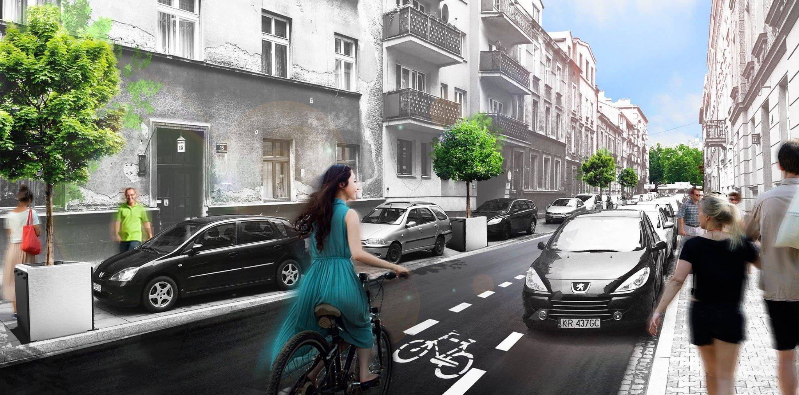
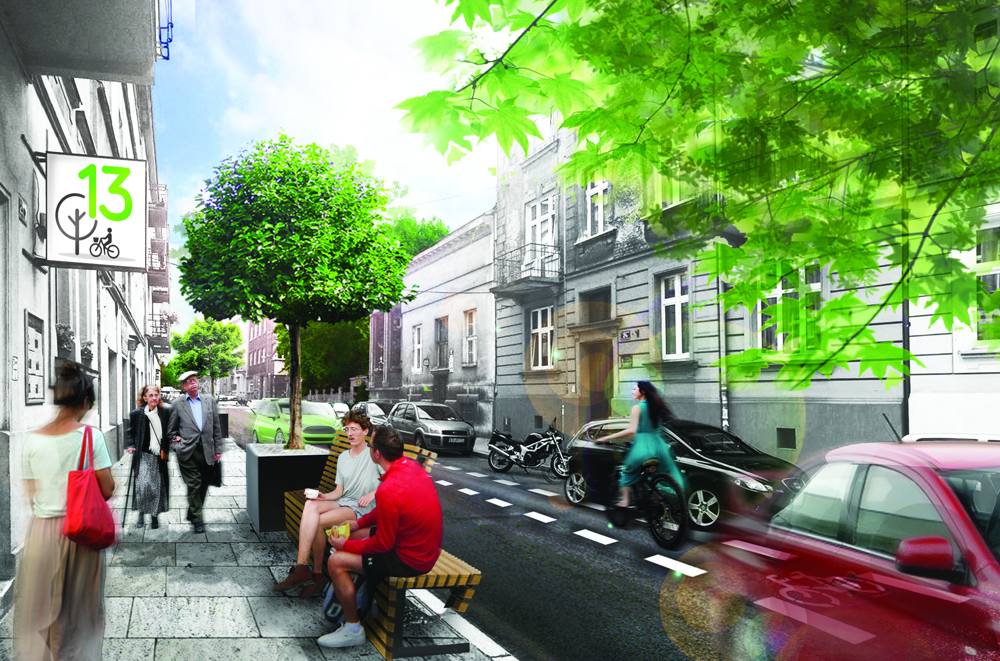

Zagłosuj na rewitalizację ul. Kraszewskiego - projekt nr 13, dz. VII

- Ograniczenie prędkości do 30km/h
- Kontrapas
- Utrzymanie miejsc parkingowych
- Donice z zielenią wysoką
- Kosze na śmieci
- Oznakowane przejścia dla pieszych
- Nowa nawierzchnia chodnika

Głosowanie 20-28 czerwca
W lokalach
- 20.06 Plac na Stawach podczas "Balu na Stawach" w godz. 17:00 - 20:00
- 22.06 - 23.06 siedziba Rady Dzielnicy, ul. Prusa 18, w godz. 17:00 - 20:00
- 24.06 - 26.06 siedziba Rady Dzielnicy, ul. Prusa 18, w godz. 09:00 - 13:00
- 20.06 - 27.06 Krowoderska Biblioteka Publiczna - Filia nr 2, ul. Fałata 2, w godz. otwarcia biblioteki
Kolejne szerokie elementy graficzne: mapka rowerowa, mapka hałasu, mapka zanieczyszczenia, mapka z decyzjami o wycinkach